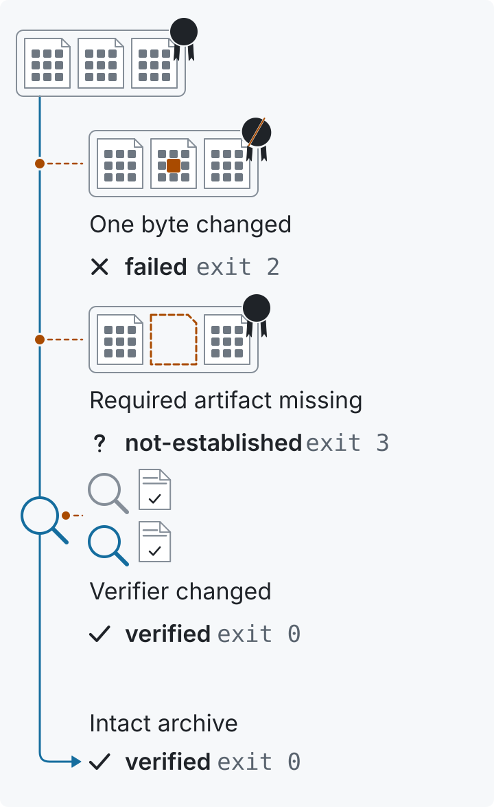

Check what your agent evidence proves.
Test a verifier, replay a decision, or inspect a retained run. Start with one useful check and the bytes behind its result.
Test a verifierPinned Python and Go commands, conformance cases, and expected outcomes.

Follow the evidence.
Choose your next task.
Replay an evidence decision
Reproduce a retained file-action example. Inspect its inputs and the refusals for changed authority, altered bytes and replay.
Choose a component
Find the tool for observation, claim checks, admission policy, vocabulary, JSON or signatures. The catalog keeps status and source pins together.
Inspect or contribute a run
Read the Open Evidence Lab's retained results, follow their provenance, or submit a result another reader can check.